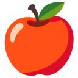
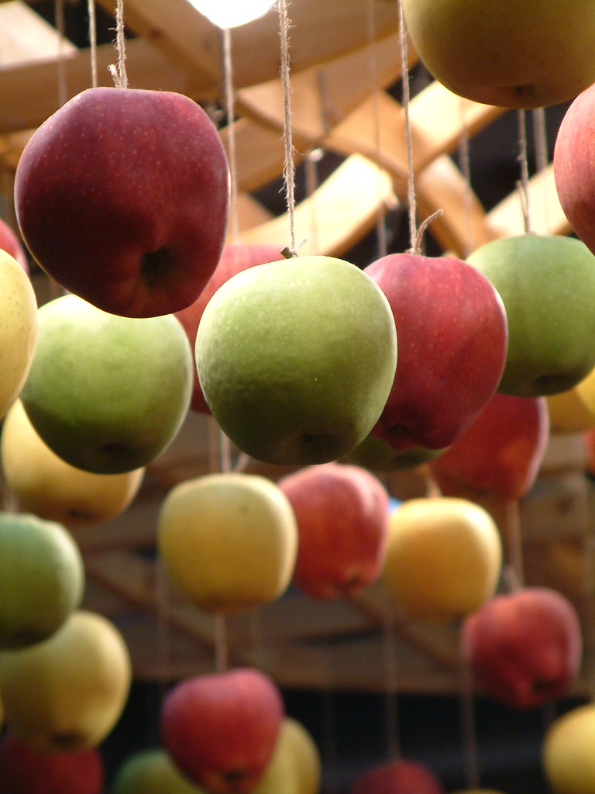

01ILUSTRACIÓN VECTORIAL

Noto Emoji
2,1 KBFormas claras y colores planos. Es la opción más ligera de esta muestra.
Ver biblioteca ↗Google · Apache 2.0
Comparamos las mismas palabras con ilustraciones de Noto Emoji, Fluent Emoji y fotografías encontradas en Openverse. Selecciona una palabra para juzgar cuál ayuda más a recordarla.
¿Qué imagen reconocerías más rápido al practicar?

Formas claras y colores planos. Es la opción más ligera de esta muestra.
Ver biblioteca ↗
Más volumen y textura, con una apariencia suave y expresiva.
Ver biblioteca ↗
Una imagen real ofrece contexto, aunque exige seleccionar y acreditar cada foto.
Ver imagen y licencia ↗Noto y Fluent tienen una apariencia predecible entre palabras. Sus archivos se pueden guardar con la aplicación.
Openverse es un buscador, no una biblioteca de estilo único. Hay que comprobar relevancia, calidad, autor y licencia imagen por imagen.
Estas tres fotos son CC BY-NC-SA 2.0: requieren atribución y no permiten uso comercial. Para una versión comercial habría que sustituirlas.
Los SVG de Noto Emoji pertenecen a Google y están bajo Apache 2.0. Los PNG de Fluent Emoji pertenecen a Microsoft y están bajo MIT. Las copias de los avisos se incluyen en assets/comparativa/.
Las tres fotografías fueron encontradas en Openverse y se presentan sin modificar bajo CC BY-NC-SA 2.0. Esta página es una demostración de diseño, no una selección definitiva para el contenido de Trazo.